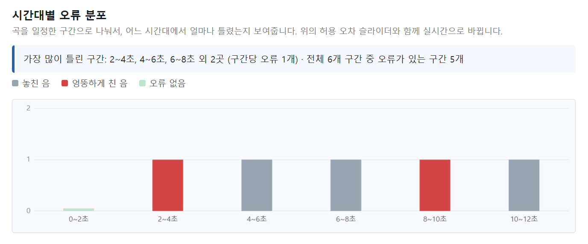
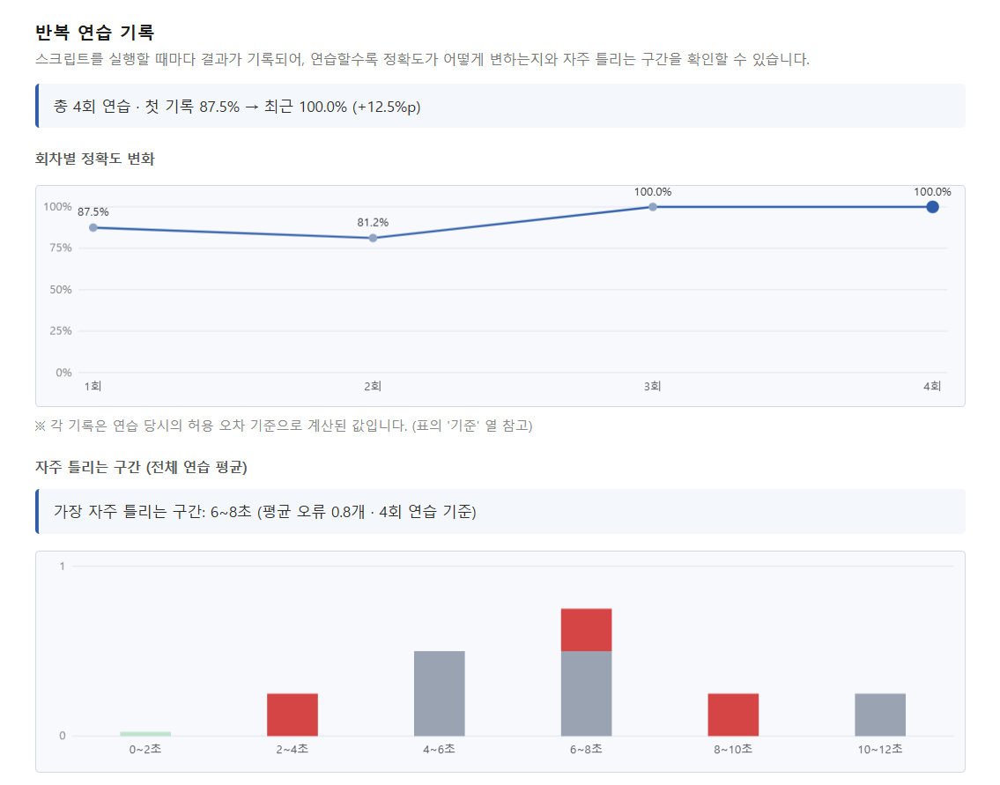
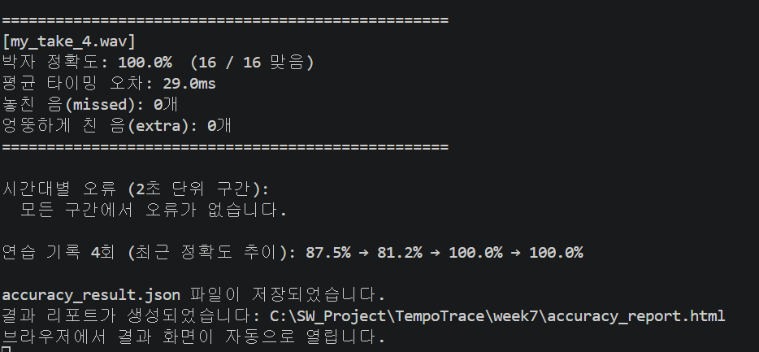

- 실제 기타 연주를 스마트폰으로 녹음해서 진짜 데이터로 전체 기능 테스트
- 슬라이더로 찾은 적절한 허용 오차 기준값을 프로그램 기본값으로 반영
- 결과 화면 UI 마무리 다듬기 (모바일 화면 대응 등)
이번 2주에는 이 중 결과 화면 다듬기(모바일 대응)를 진행하고, 처음 계획서에 있던
시간대별 오류 시각화와 반복 연습 누적 분석 기능을 구현했습니다.
| 기능 ① | 시간대별 오류 분포 — 곡을 구간으로 나눠서 "몇 초 구간에서 얼마나 틀렸는지"를 막대그래프로 표시 |
|---|---|
| 기능 ② | 반복 연습 기록 — 연습 결과를 계속 누적해서 정확도 변화 추이와 "자주 틀리는 구간"을 분석 |
| 개선 ③ | 사용성 — 여러 번의 연주를 한 번에 분석, 모바일 화면 대응, 구간별 상세 정보 말풍선 |
※ 기능 ①·②는 1주차 계획서의 2단계(시간대별 오차 시각화)와 3단계(반복 연습 추이 분석)에 해당합니다.

practice_history.json에 자동 기록 (일시, 정확도, 평균 오차, 구간별 오류)
# 기본: original.wav 와 my_take.wav 비교 python accuracy_test.py # 여러 번의 연습(take)을 순서대로 분석하고 기록에 누적 python accuracy_test.py take1.wav take2.wav take3.wav # 옵션: 기록에 남기지 않기 / 기록 초기화 python accuracy_test.py take1.wav --no-history python accuracy_test.py --reset-history
여러 번의 연습을 한 번에 실행하면, 연주마다 결과가 출력되고 마지막에 연습 기록의 정확도 추이가 정리됩니다. 이어서 결과 웹페이지가 자동으로 열립니다.

| 1단계 | onset detection 기반 박자 정확도(%) 계산 | 완료 |
|---|---|---|
| 2단계 | 시간대별 오차를 웹페이지에 시각화 | 완료 (6~7주차) |
| 3단계 | 여러 번 연습한 기록을 누적해서 추이 분석 | 완료 (6~7주차) |
| 3단계 (스트레치) | 음정(피치) 정확도 분석 | 미진행 (추후 검토) |
--no-history 옵션으로 기록에 남기지 않고 실행 가능